Somewhere between the third cup of coffee and the 2 p.m. crash, a growing number of founders, executives, and athletes have quietly started swapping their morning brew for something older: ceremonial cacao. Not the cocoa powder in your baking cabinet — the minimally processed, whole bean paste used in cacao ceremonies for centuries across Central and South America.
Coffee isn't a niche habit — 67% of American adults drank it in the past day, according to the National Coffee Association's 2024 survey, the highest rate in over two decades. The reason more and more of them are looking elsewhere isn't nostalgia. It's the specific kind of energy coffee gives you — sharp, fast, and for a lot of people, wired straight into anxiety. A tight chest before a normal meeting. Racing thoughts reading a slightly terse email. A 2 p.m. wall that no amount of willpower can push through. Many people write this off as "just how I am." I used to think that about myself too, before I understood it was a chemistry problem, not a personality one.
"I used to wake up already behind. Coffee wasn't something I enjoyed anymore. It was something I needed." A feeling a lot of people describe, once they stop to think about it
Burnout culture didn't invent that feeling, but it definitely normalized it. Somewhere along the way, "wired and tired" became the default setting for anyone trying to keep up, and coffee stopped being a pleasure and started being a patch over a nervous system running on fumes. That's the real reason this shift is happening now: not a new supplement trend, but a lot of people quietly deciding they're done treating exhaustion with more stimulation.
How It Started
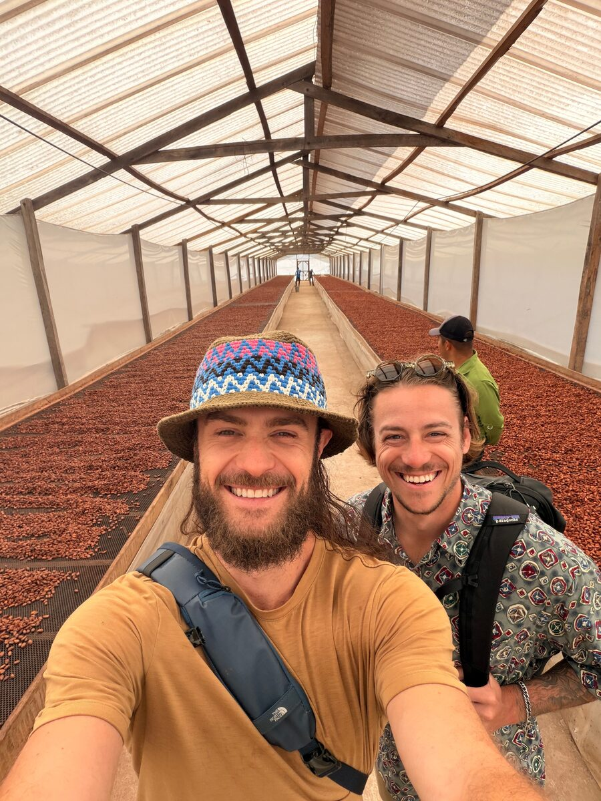
Jacob loved coffee. He just hated what four cups a day did to him — the tight chest before meetings, the crash by 2 p.m., the nights his mind wouldn't slow down even though his body was wrecked. He didn't want to quit caffeine. He wanted a version of "awake" that didn't cost him his nervous system.
"I didn't want to quit coffee. I just wanted to stop feeling like I needed it." — Jacob, Co-Founder
That question took him and his friend Marco to Peru, sitting in cacao ceremony with growers who'd been doing this for generations, long before "wellness" became a category. Something shifted there, not just in how they felt, but in what they realized energy could feel like. They came home asking one thing: how do you bring this back without losing what makes it work? That question turned into a years long obsession — one that would eventually take a very specific shape.
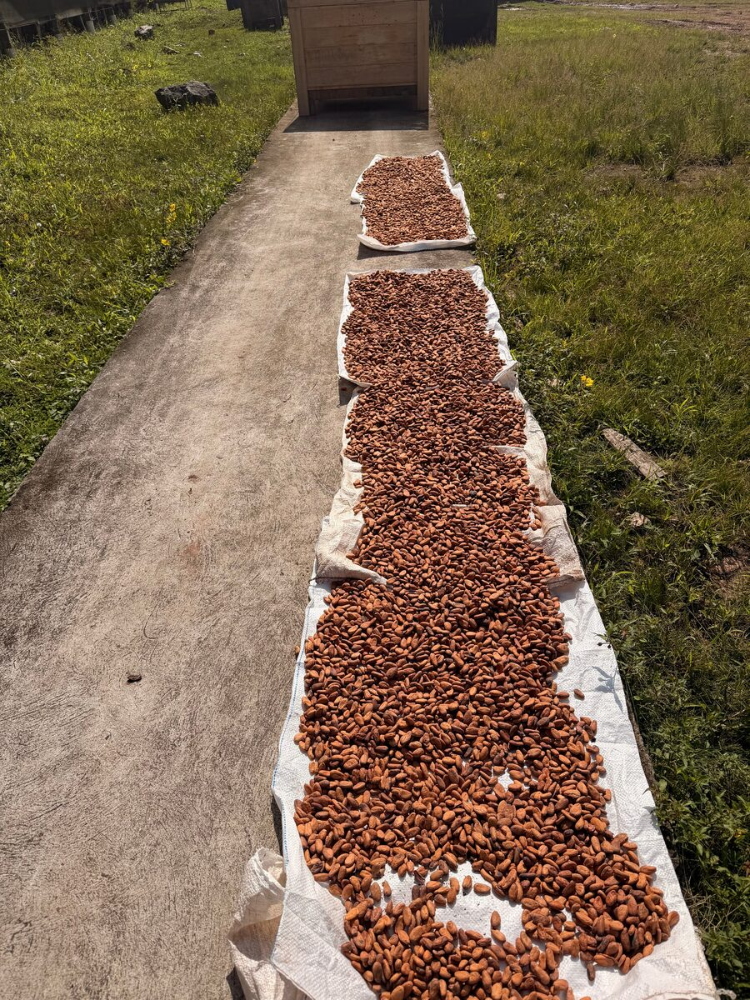
Here's the part worth sitting with before the chemistry: imagine waking up and not immediately reaching for something to fix how you feel. That's not really a caffeine story. It's a different relationship with your own mornings, and it's what the rest of this is actually about.
The Coffee Crash, Explained
Coffee's stimulant, caffeine, works by blocking the receptors in your brain that tell you you're tired. That's exactly why it feels so sharp — and why the crash a few hours later feels so rough. Caffeine peaks fast (30–60 minutes) and clears in about 5 hours, which is part of why so many people find themselves reaching for cup after cup just to stay level through the afternoon.
That's not a knock on coffee. It's just a different mechanism than most people assume, and once you see it, the 2 p.m. wall makes a lot more sense.
Why Cacao Feels Different
Cacao's primary active compound, theobromine, doesn't work the same way. Rather than blocking those tired signal receptors directly, it's understood to widen blood vessels and improve blood flow — producing a steadier, more physical sense of energy rather than a jolt to the nervous system. It's a gentler mechanism, and it shows up as a gentler feeling: alert, but not wired.
The Short Version
- Caffeine blocks adenosine receptors in the brain — fast onset, sharp peak, hard crash, and for many people, a jittery, anxious edge.
- Theobromine, cacao's main active compound, is roughly ten times gentler than caffeine, works more through the cardiovascular system, and has a longer, smoother half life — described by researchers as an "alert calm" rather than a jolt.
- Magnesium, naturally present in whole cacao, is one of the more well studied minerals for supporting a relaxed nervous system.
- Cacao also contains trace amounts of anandamide, nicknamed the "bliss molecule" for the sense of contentment associated with it.
The short version: alert, not wired.
That's exactly the mechanism Jacob and Marco built their formula around after Peru — heirloom cacao for the theobromine and magnesium, paired with six real mushroom extracts, designed around a steadier kind of energy instead of the spike and crash most people have learned to live with.
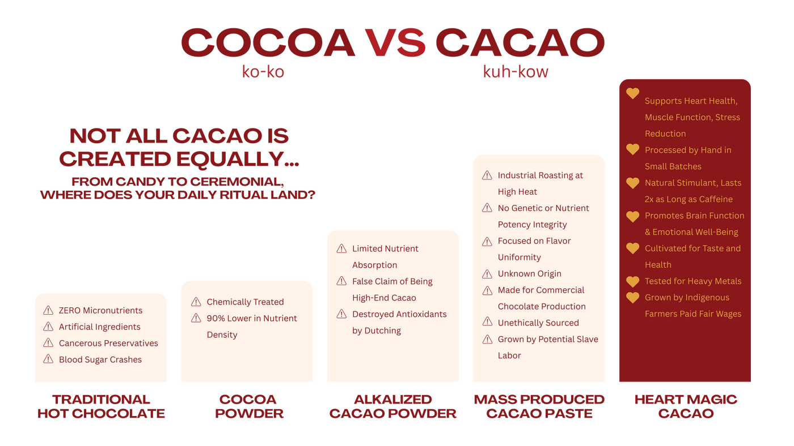
None of this makes cacao a treatment for anxiety — it isn't one, and this isn't medical advice. But the mechanism helps explain a pattern showing up again and again in people who've made the switch: the feeling of being wired seems to ease, even as the sense of being awake stays put.
Quick Questions, Before We Go Further
- Does it taste weird? No — it tastes like rich, real drinking chocolate. The mushroom extracts are formulated to disappear into the cacao.
- Is it expensive? About $2.35 a serving at 20 servings per order — in the same range as a specialty coffee drink, minus the crash.
- Will I actually feel anything? Most people notice something within the first few days: less of the wired, jittery edge, and steadier focus through the afternoon.
- Is this another wellness fad? Ceremonial cacao has been used for centuries. What's new is drinking it instead of coffee, not the cacao itself.
What People Notice After They Switch
The pattern shows up consistently in cacao communities and among people who've made the swap: a quieter background hum of anxiety, energy that lasts longer without a hard crash, and better sleep — unsurprising, given they're no longer putting a stimulant with such a long half life into their body in the middle of the afternoon. It's not a clinical study, and anxiety has plenty of causes no beverage will fix on its own. But for a lot of people, it's the first time they've been able to separate "my personality" from "my caffeine intake."
- Calmer mornings, without the tight chested, wired feeling
- Fewer jitters and less afternoon crashing
- Steadier focus that doesn't spike and drop
- Easier sleep, since there's no long acting stimulant left in the body by evening
- Actually looking forward to the ritual, instead of just needing it
So What Are People Actually Drinking?
Up until now, we've been talking about cacao in general. But if you're wondering what Jacob and Marco actually created after returning from Peru, it's this: Heart Magic — heirloom ceremonial cacao, hand poured into pre portioned hearts, blended with six real mushroom extracts. Not a supplement stacked on top of coffee. A replacement for it.
Why Thousands Are Making The Switch
This isn't a niche trend anymore. Cacao communities online are full of the same story: someone quits coffee expecting to feel worse, and instead feels calmer within a week. Over 276 verified five star reviews later, the pattern holds.
A few lines pulled straight from real, verified reviews: "helped so much with my anxiety and focus," "the emotional benefits are unmatched," "a genuine game changer for my morning routine." The full reviews, unedited, are just below.
Testimonials
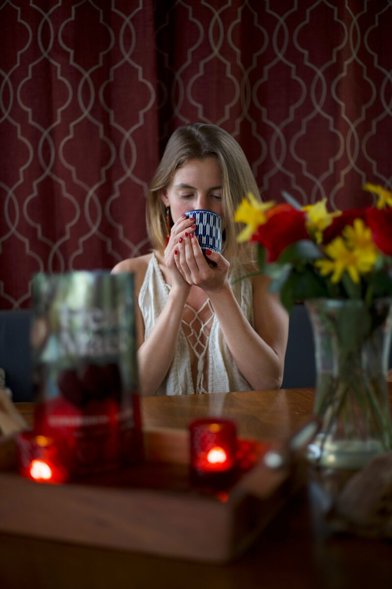
"I usually don't love anything on TikTok shop but I'm so glad I found this — it's helped so much with my anxiety and focus."
— EdithCH H., Verified Buyer"I have been consistently drinking this cacao at least once a day for several months now... the emotional benefits are unmatched. Cacao helps me remain present, grounded, and so full of joy!"
— Jeannie J., Verified Buyer"I've tried many brands of cacao. Heart Magic is by far the best. Very delicious and uplifting! I'll forever be a fan."
— Stephanie H., Verified Buyer"I quit coffee last year and have been looking for a morning alternative ever since. Heart Magic gives me the ritual, tastes naturally good, and makes me feel fantastic."
— Cory S., Verified Buyer · Former Coffee Fanatic"These are so easy to froth up in the morning, and I love that I don't get that jittery, anxious feeling like I do with coffee."
— Tona D., Verified Buyer · Previous Coffee Fanatic"I'm a self proclaimed chocoholic, and this is the first time I've tasted something that felt like real chocolate, not sugar and filler."
— Arlene, Verified Buyer"I brought this to a friend's house and she told me afterward she hadn't felt this connected and open in years. That's the effect this has on people."
— Felicia N., Verified Buyer"Absolutely magical! This has been a genuine game changer for my morning routine."
— Chris A., Verified Buyer"A couple of hearts arrived broken in shipping, but the flavor was so profoundly delicious I didn't even care. I highly recommend Heart Magic."
— Mayra A., Verified BuyerWhy People Don't Go Back To Coffee
Ask around in cacao communities and a theme repeats: people don't usually talk about "giving up" coffee. They talk about not wanting to go back. Not because coffee is evil, plenty of people still enjoy a cup, but because once the wired, anxious edge is gone, most people don't miss it. They keep the ritual. They just stop paying for it with their nervous system.
Imagine Your Morning
Sunlight through the window, before your phone has a chance to fill the room with everything else. Water heating on the stove. A heart dropped into the mug, frothed until it turns a deep, glossy brown. Five quiet minutes with both hands wrapped around something warm, before you check a single notification. This isn't really about caffeine versus no caffeine. It's about what your morning ritual is quietly training your nervous system to expect — and whether you're selling yourself a feeling, or just a drink.
- Phone in hand before your feet hit the floor
- First cup hits fast, mind starts racing
- Tight chest walking into the first meeting
- Crash by 2 p.m., so you make another cup
- Wired at night, tired all day
- A few quiet minutes before the day starts
- Warm mug, slow sip, no rush
- Alert and clear, not wired
- Energy that actually lasts the afternoon
- Falls asleep easier, nothing stimulating left in the system
Heart Magic Might Be For You If...
- Coffee makes you anxious, jittery, or leaves your chest a little tight
- You crash every afternoon, no matter how much you had that morning
- You love the coffee ritual, just not how it makes you feel afterward
- You're looking for steadier energy instead of a spike and a wall
- You want to be more intentional with your mornings, not just caffeinated
Meet Heart Magic
Heart Magic sources rare, heirloom cacao from single origin family farms in Peru, hand poured into pre portioned cacao hearts — no chopping, no blender, no mess. Each heart is blended with six real mushroom extracts, whole fruiting bodies, not mycelium grown on grain, and delivers around 200mg of naturally occurring theobromine, with nothing artificial and no refined sugar or fillers.
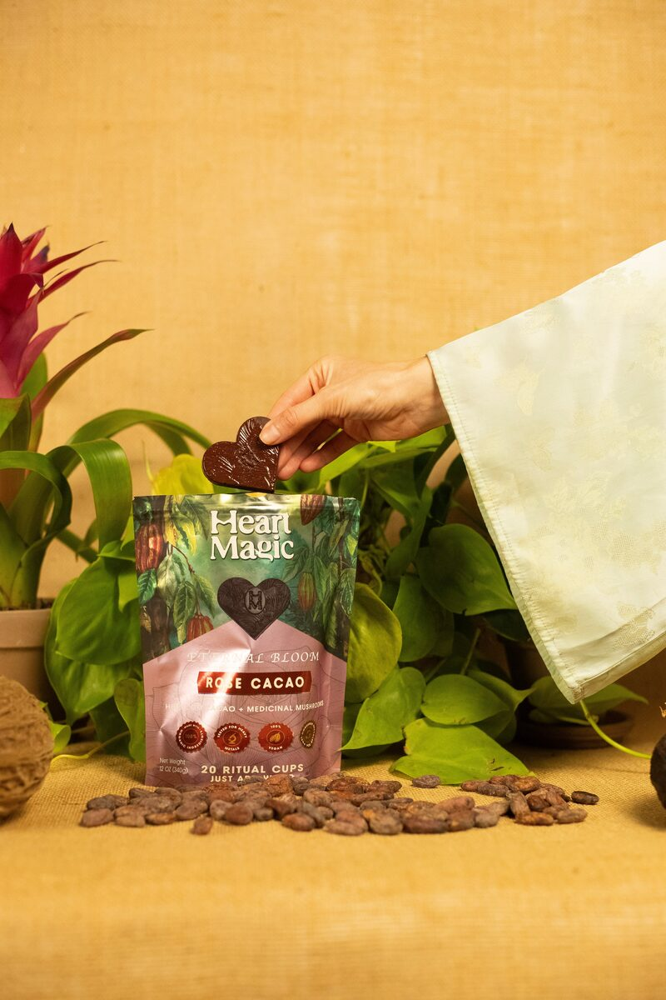
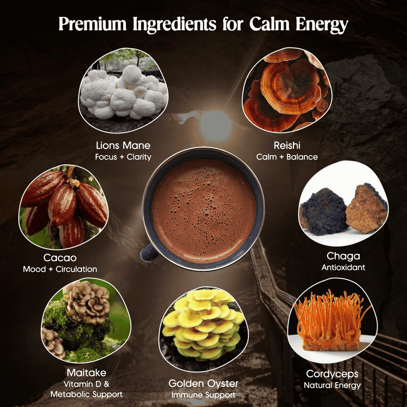
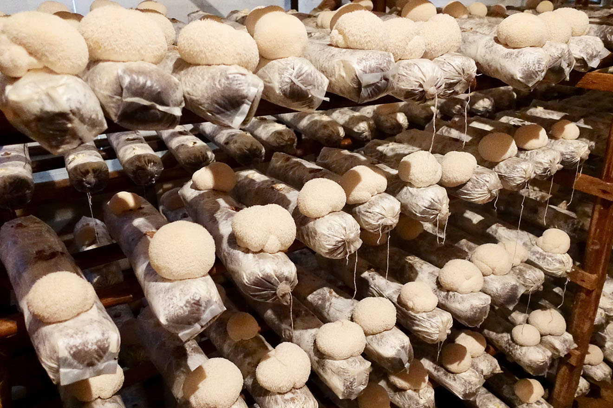
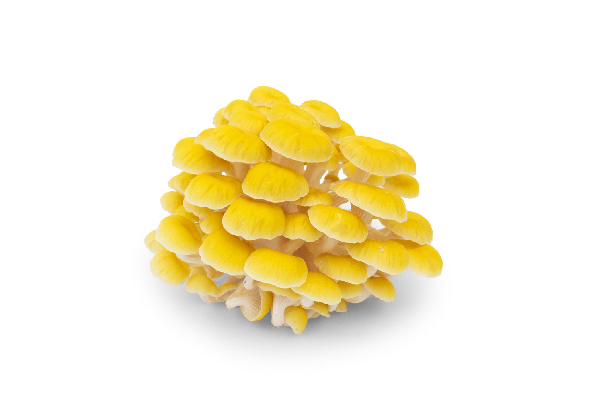
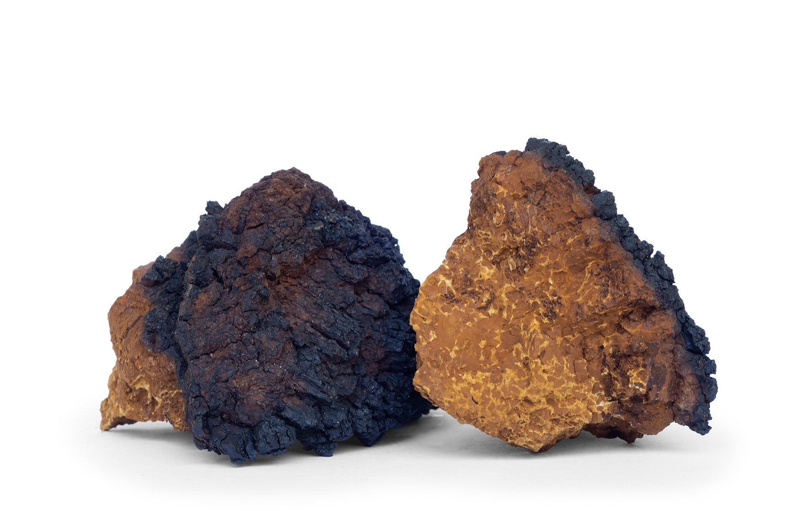
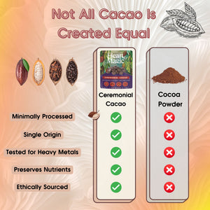
Every batch is independently tested for heavy metals before it ships — no guesswork, just documentation.
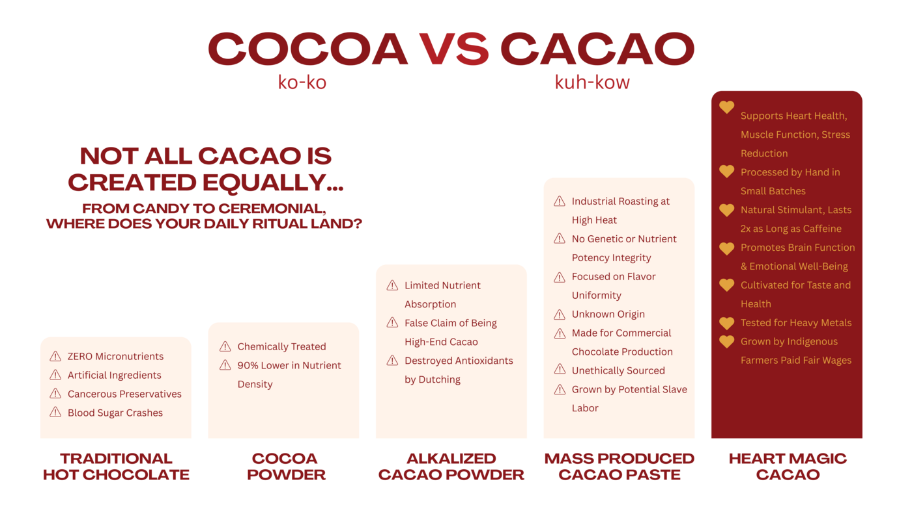
Start With The Free Morning Ritual Guide
Get The Morning Ritual Journal — a free step by step guide to a five minute morning ritual, plus journal prompts and a 7 day tracker to notice what changes when you slow your mornings down.
The Offer
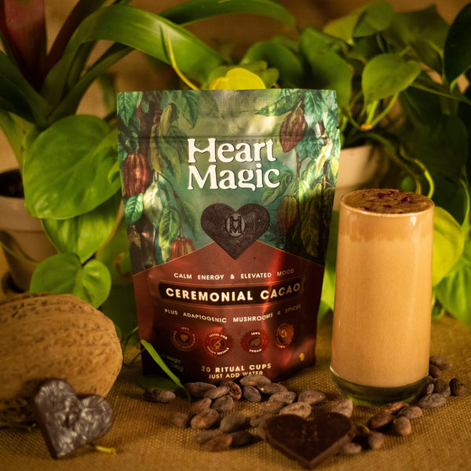
Heart Magic — Original Blend
✓ ~200mg theobromine per heart
✓ 6 real mushroom extracts, no fillers
✓ Vegan, gluten free, no refined sugar
FAQ
Yes. Unlike coffee and other caffeinated drinks, cacao's effect comes more from stimulating blood flow than from blocking receptors in the brain — most people describe it as a more relaxed energy. Dosage matters, so if you're sensitive, start with half a heart and adjust from there.
About 30 seconds: heat water, drop in a heart, froth, and add maple syrup or your milk of choice if you want it sweeter or creamier. Enjoy.
Grown on a small, family run farm, single origin, hand poured, and processed with minimal intervention rather than the industrial alkalizing used for most cocoa powder.
No. Heart Magic tastes like rich, real drinking chocolate. The mushroom extracts are formulated to disappear into the cacao, no earthy or "mushroom" flavor to speak of.
One heart is a full serving, pre portioned so there's no measuring. Some people start with half a heart if they're sensitive to theobromine.
Tomorrow Morning
Imagine waking up and not immediately reaching for something to fix how you feel. No tight chest before the first meeting. No 2 p.m. wall. Just a warm mug, five quiet minutes, and energy that actually lasts the day, calm enough that you notice the morning instead of rushing through it.
That's not a caffeine promise. It's what tends to happen once you stop asking a stimulant to do a nervous system's job. A lot of people who've made the switch say some version of the same thing: cacao didn't fix something broken in them. It just gave them their mornings back.